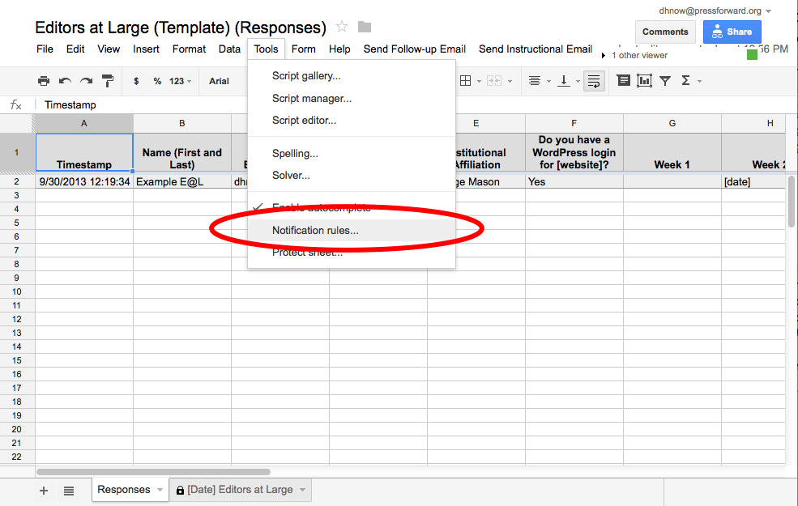
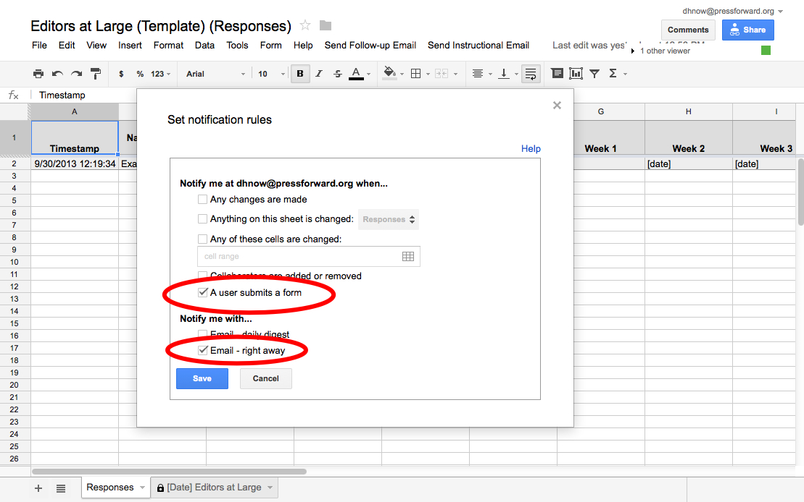

Maintaining Editors-at-Large Signup Sheets
All signups for Editors-at-Large are collected in the “Editor at Large Form” and stored in the “Editors-at-Large” spreadsheet. Templates for these documents can be found at https://drive.google.com/templates?view=public&authorId=13915956391757816891.
As Admin, you are responsible for maintenance of the form and for creating user accounts for all new Editors-at-Large.
Maintenance of the form
- Keep form clean for both Editors-in-Chief and for the website.
- Remove weeks from sign-up form as they pass or are full.
- Hiding weeks on the Filtered page (currently “Fall 2013 Editors at Large) as they pass.
- Manage shifting of the form at end of semester
- Add editors to the Editor-at-Large Registry. Check for duplicates.
- Archive the current responses under a new tab with date and clear all of the entries from the “Responses” sheet.
- Recreate the form with the upcoming semester’s weeks.
- Update the date on the “Schedule” sheet.
As new editors-at-large sign up for spots, the admin is responsible for:
- Creating user accounts for new Editors-at-Large
- Create CSV file from Editor at Large spreadsheet by copying name and email address columns into new excel doc or google spreadsheet and saving as CSV file. Use date as filename.
- Upload CSV file into “Add Multiple Users” plugin.
- Select user_login and user_pass values for the columns and confirm that columns selected appropriated.
- Save used CSV file to “CSV Files” folder in the Admin folder
- Following the new editor-at-large back on Twitter
Tricks for keeping up with new Editors-at-Large
- Set up notification to alert you when new Editors-at-Large volunteer.


Maintaining the Editors-at-Large Registry[a]
At the end of the semester, all editors-at-large (their names, twitter handles and institutional affiliations) should be copied over to the Editors-at-Large Registry.
Be sure to:
- Remove shading
- Remove duplicates
- Re-alphabetize the list
[a]Can this be done whenever new user accounts are created? Some editors-at-large have been emailing to say that they couldn't find their name. Appearing in the registry seems to be an important type of credit we can give -JFT